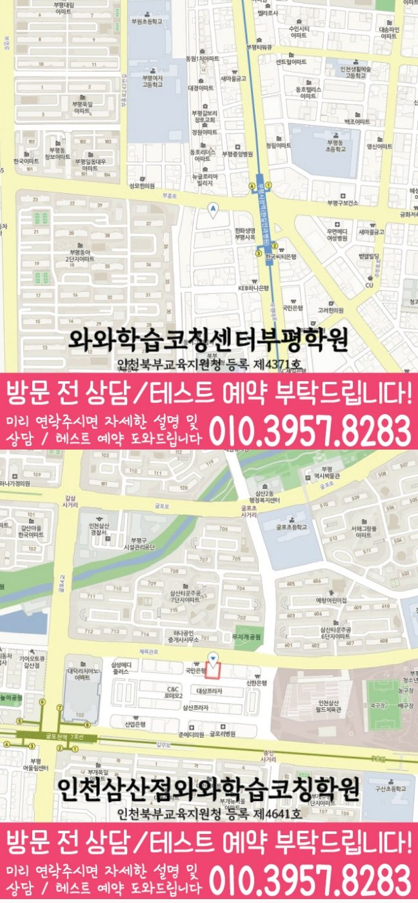

Middle school Korean · English · Math
부평동 중학생 국영수학원
부평동 중학생 국영수학원 선택 전 중등 내신 자료, 최근 오답과 과목별 가능 학년, 센터 위치·비용 확인 기준을 안내합니다.
01 Quick answer
부평동에서 먼저 확인할 내용
부평동에서 중학생 국영수학원을 찾는다면 와와학습코칭센터 부평점의 과목별 가능 학년을 먼저 확인하세요. 제공된 중학교 참고 자료와 학생의 실제 교재를 대조하고, 학생의 실제 풀이 기록에 맞게 세 과목을 같은 분량으로 늘리기보다 과목별 완료 기준과 재확인 날짜를 정해야 합니다.
대표 학생 상황
개념 설명을 들으면 이해하지만 응용 문항에서 풀이 출발점을 놓치는 수행평가가 겹친 학생


010-6839-8283010-6839-8283상담 전 핵심 안내
부평동 중학생 국영수학원을 찾는 학부모님이라면 세 과목을 한꺼번에 맡길 수 있는지보다, 우리 아이의 약점이 과목별로 분리되어 관리되는지를 먼저 보시면 좋습니다. 부평동 중학생 상담에서는 주간 복습 기록을 수업 전후 기록에서 살펴 재확인 날짜를 남깁니다. 따라서 부평동 중학생 국영수학원 선택의 출발점은 등록 여부가 아니라 부평동 학생의 현재 단원, 과목별 약점, 주간 관리 가능성을 함께 확인하는 데 있습니다.
부평동 중학생 국영수 선택 기준
학습 시작 시각을 상담 주제로 함께 확인하면 부평동 학생의 수업 참여, 과제 흐름, 복습 주기를 생활 리듬에 맞춰 판단하기가 수월합니다. 상담에서는 부평동 학생의 최근 교재와 오답을 바탕으로 다음 학습 순서를 구체화해야 합니다. 세 과목을 함께 계획해도 부평동 학생의 병목과 복습 기록은 따로 확인해야 합니다. 부평동에서 비슷한 학습 상황을 보이는 학생에게 같은 시간표 안에서도 국어 독해, 영어 문장 해석, 수학 풀이 과정이 서로 다른 속도로 조정되어야 합니다.
부평동에서 자주 보이는 기초 확인형 학습 상황
비슷한 학습 흐름을 보이는 학생은 무조건 선행을 늘리기보다 지금 틀리는 유형을 말로 설명하고, 다음 과제에서 같은 오류가 줄어드는지를 확인하는 흐름이 적합합니다. 부평동에서 비슷한 어려움을 겪는 학생의 상담 흐름을 살펴봅니다. 기초 확인형 관점으로 보면 처음에는 성적 한 줄보다 오답이 생긴 과정과 공부 시간의 사용 방식을 함께 확인합니다. 부평동에서 세 과목 계획을 정하기 전 학생이 막힌 문제와 질문하지 못한 내용을 먼저 구분하세요. 인천광역시 부평구 부평동 중학생 상담에서는 국어 지문 표시 습관, 영어 단어 누적 방식, 수학 풀이 노트의 빈칸을 각각 확인해야 학습 시작 시각도 실제 학습 계획에 반영할 수 있습니다.
학교 자료로 살펴보는 부평동 중학생 학습 우선순위
과목별 기록을 살펴보면, 제공된 중학교 참고 목록은 부원중·부원여중입니다. 확인 순서를 세울 때, 이 목록은 수업 가능 여부를 보장하지 않으며, 상담에서 학생이 가져온 실제 학교 자료를 대조하기 위한 정보입니다.
상담 전에 정리해 보면, 부평동 중학생의 현재 자료를 국어·영어·수학으로 분류하면 시험·교과 범위와 복습할 단원을 더 명확히 볼 수 있습니다. 학생의 현재 자료를 기준으로 보면, 학교 일정이 주간 과제에 반영되는지도 함께 확인합니다.
인천광역시 부평구 부평동 중학생을 위한 주간 점검 방식
이와 비슷한 상황의 학생이라면 수업 직후의 이해도보다 일주일 뒤 같은 유형을 다시 풀 수 있는지가 더 중요하므로 인천광역시 부평구 부평동 학부모는 관리 기록의 주기를 살펴야 합니다. 부평동 방문 상담 주소는 인천광역시 부평구 부평동 부흥로 264 5층 와와학습코칭센터입니다. 중학생의 경우 학교 일정과 등하원 시간을 놓고 지속 가능한 시간표인지 살펴보는 편이 좋습니다. 학습 시작 시각은 단순한 부가 정보가 아니라 부평동 중학생이 수업을 빠지지 않고 따라갈 수 있는지 판단하는 운영 기준이 될 수 있습니다. 부평동 중학생의 국어·영어·수학 학습 점검 상담에서는 출결, 과제 제출, 보충 여부, 질문 기록처럼 학부모가 집에서 확인하기 어려운 항목을 어떤 방식으로 공유하는지 물어보면 좋습니다.
부평동 중학생 학습 과정 상담 전 준비할 질문
학습 시작 시각 설명은 등록을 서두르기 위한 문구가 아니라 수업 지속성, 보충 방식, 학부모 소통 범위를 확인하는 질문으로 활용하는 편이 바람직합니다. 부평동 중학생 학습 점검 상담 전에는 최근 시험지, 틀린 문제 표시, 학교 과제 일정, 자녀가 어려워한 단원 이름을 간단히 적어 가면 답변이 훨씬 구체적입니다. 학부모는 부평동 학생의 실제 공부 기록에 맞는 과목별 보완 순서를 질문할 수 있습니다. 중학생의 경우 학생의 왕복 이동 시간이 과제와 오답 복습을 방해하지 않는지도 함께 점검해야 합니다.
02 Consultation examples
부평동 학부모 상담 상황 예시
아래 내용은 실제 고객 후기나 성적 결과가 아니라, 상담에서 확인할 질문을 이해하기 위한 상황 예시입니다.
최근 학교 학습 준비가 한 과목에 치우친 부평동 중학생을 가정했습니다. 학부모는 현재 교재와 학교 자료를 바탕으로 국어·영어·수학의 병목을 따로 듣고, 가정에서 확인할 기록을 정리합니다.
부평동에서 제공된 중학교 참고 정보인 부원중·부원여중의 목록과 학생의 실제 학교 자료를 대조해 질문하는 경우입니다. 학부모는 교습비와 시간표뿐 아니라 과목별 진단 근거, 보완 순서와 일정 시간이 지난 뒤 재확인하는 방법까지 질문합니다.
03 FAQ
부평동 중학생 국영수학원 자주 묻는 질문
학부모님이 상담 전에 자주 확인하는 내용을 질문과 답변으로 정리했습니다.
부평동 중학생 국영수학원 상담에서 첫 번째로 확인하는 내용은 무엇인가요?
학교 일정과 학원 과제를 한 주 안에 배치하기 어렵다면 최근 시간표와 과제 기록을 대조해 보세요. 부평동 상담에서는 과목별 최소 복습량도 확인할 수 있습니다.
국어·영어·수학 과제량은 부평동 중학생에게 어떻게 배분하나요?
부평동 상담에서는 국어는 지문과 선택지의 근거, 영어는 문장 구조와 해석 순서, 수학은 개념을 식으로 옮기는 과정을 따로 확인해야 합니다. 이후 시험 일정과 복습 시간을 보고 세 과목의 주간 분량을 조정합니다.
부평동 학교별 교과 자료는 어떤 방식으로 확인하나요?
학교명은 상담 준비를 위한 참고 정보입니다. 부원중·부원여중 등과 관련한 실제 수업 여부는 학생의 시험 범위표·학교 프린트·수행평가 일정 자료, 센터의 현재 개설 범위와 함께 확인해야 합니다.
부평동 학원 상담에서 수업 가능 학년과 비용을 어떻게 확인하나요?
센터마다 운영 조건이 다를 수 있습니다. 실제 방문 위치는 위 센터 확인 정보에서 확인할 수 있습니다. 센터별 교습비 확인 버튼에서 제공 자료를 볼 수 있습니다. 부평동 상담에서 과목별 가능 학년과 보강 방식을 함께 확인하세요.
04 Continue
부평동 페이지 이동
카테고리 전체 지역 또는 앞뒤 지역 안내로 이동할 수 있습니다.